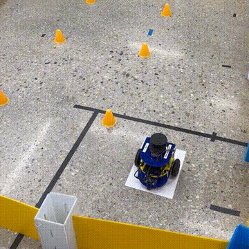
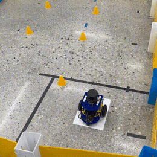
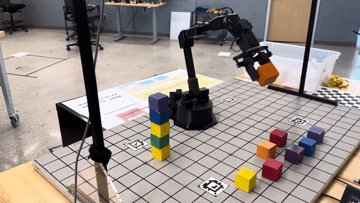
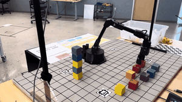
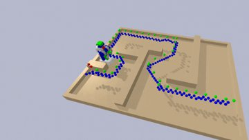
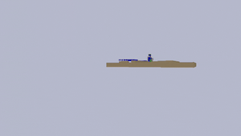
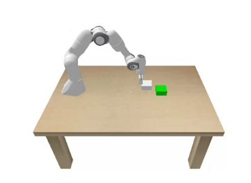
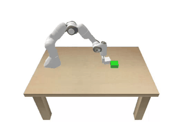

Sukruthi Chidananda
I’m a Robotics Software Engineer on the Autonomy Team at Bear Robotics. I’m interested in how robots can anticipate the people around them, and use that to move safely and naturally in shared spaces: human intent inference, behavior prediction, and socially aware planning and control.
Before Bear, I built autonomy and human following for service robots in hospitals and public spaces, and was a research fellow at NIOSH with Dr. Marvin Cheng, working on human-following control and human-subject studies.
I have an MSc in Robotics from the University of Michigan, where I did research with Prof. Christoforos Mavrogiannis and Prof. Ram Vasudevan. Before that, I earned a B.Tech in Mechanical Engineering from Amrita School of Engineering and worked as a mechanical engineer at Volvo Group.

News
- Oct 2026Started independent research on intent-aware human–robot collaboration.
- Jun 2026Joined the Autonomy Team at Bear Robotics.
- Jun 2025Presented “Memory-Augmented MPC for Human-Following Robot in Cluttered Environments” at UR 2025.
- Sep 2024Started a research fellowship at NIOSH with Dr. Marvin Cheng.
- May 2024Graduated with an MSc in Robotics from the University of Michigan.
Research
Intent-Aware Robot Adaptation in Collaborative Stacking
Independent research · ongoingHow can a robot adapt when a human partner steps into a shared task, without disrupting their flow, and still complete the task? In collaborative stacking, a vision-language-action policy (SmolVLA) performs the stacking while a planner and monitor track what the human has changed and re-plan the remaining steps. Built in Isaac Sim on a Franka arm and trained on scripted expert demonstrations. Evaluation with human interjections is in progress, for submission to HRI 2027 Late-Breaking Reports.
Memory-Augmented MPC for Human-Following Robot in Cluttered Environments
International Conference on Ubiquitous Robots (UR), 2025 — PosterMAMPC is a human-following controller with temporal memory: a sliding window of recent optimal control inputs and their collision costs lets the MPC refine high-risk parts of its horizon and follow more smoothly. An elliptical personal-space model (personal, robot-buffer and social zones) sets how close the robot may come. In simulation (2D and Gazebo, Freight100 robot), across 150 trials in six cluttered environments, MAMPC succeeded in 98% of trials versus 20% for standard MPC, keeping a 2.5 ± 0.3 m following distance.
Human-Subject Studies on Proxemics and Attention
NIOSH, 2024–2025Designed the motion-planning and control pipeline for a proxemics study that combines motion capture and physiological sensing to measure interpersonal spacing and perceived comfort around a mobile robot. Led a VR study on how drone noise and visual cues affect attention in high-risk environments, using physiological, biomechanical, and task-performance measures.
Eye Gaze as a Predictor of Human Navigation Intent
Fluent Robotics Lab, University of Michigan, 2024Explored whether gaze features (fixation duration, saccade direction, goal bias) help predict where a person will walk, using the MoGaze and THÖR-MAGNI motion-capture and eye-tracking datasets. The main challenges were noisy gaze signals and the scarcity of open datasets that capture gaze during navigation, which limited what could be concluded and pointed to the need for richer real-world gaze data.
Reachability-Based Planning via Zonotope Slicing
ROAHM Lab, University of Michigan, 2023Optimized zonotope-based Forward Reachable Set computation and slicing in the REFINE planner for real-time safe trajectory planning, cutting FRS computation time by 58.6%.
Gust-Robust Control for a VTOL Tailsitter UAV
Flight Dynamics Lab, University of Michigan, 2023–2024Developed and flight-tested motion planning and control for a custom PX4 VTOL tailsitter, including INDI-based gust stabilization, and designed waypoint-navigation missions.
Analysis of Subsonic Flow Over Delta-Winged Aircraft
AIP Conference Proceedings 2358(1): 070007, 2021 (ICMMSE 2020)Experience
- Oct 2026 – presentIndependent Researcher
- Jun 2026 – presentRobotics Software Engineer, Bear Robotics — stress testing and obstacle memory for autonomous navigation in cluttered, dynamic spaces
- Apr 2025 – Jun 2026Robotics Engineer, Vecna Technologies — autonomy stack and human following for the UB1 service robot in hospitals and public spaces
- Sep 2024 – Apr 2025Research Fellow, National Institute for Occupational Safety and Health (NIOSH) — the U.S. federal institute for worker safety and health; researched how robots can work safely around people in the workplace
- Feb 2024 – Aug 2024Independent Researcher, Fluent Robotics Lab, University of Michigan
- Sep 2023 – Mar 2024Research Assistant, Flight Dynamics Lab, University of Michigan
- May 2023 – Aug 2023Research Assistant & Intern, ROAHM Lab, University of Michigan
- Jan 2023 – Apr 2023Research Assistant, Corso Lab, University of Michigan — human body volume estimation from CMU Panoptic pose data
- Feb 2021 – Feb 2022Mechanical Engineer, Volvo Group
- Oct 2019 – Jun 2020Undergraduate Researcher, Amrita School of Engineering
Projects




Vision-Based Manipulation with a 5-DOF Robotic Arm
University of Michigan · Oct 2023 – Jan 2024RGB-D perception, camera calibration, and inverse kinematics (DH and PoX) on an RX200 arm for pick-and-place and color/shape sorting in cluttered scenes. Placed 3rd of 12 teams in a multi-event manipulation challenge.




Learning Dynamics Using Neural ODEs
ROB 498 report, University of Michigan, 2024 · with S. PriyadharshanEducation
- Aug 2022 – May 2024MSc in Robotics, University of Michigan, Ann Arbor
- Jul 2016 – May 2020B.Tech in Mechanical Engineering, Amrita School of Engineering (Amrita Vishwa Vidyapeetham), Bengaluru